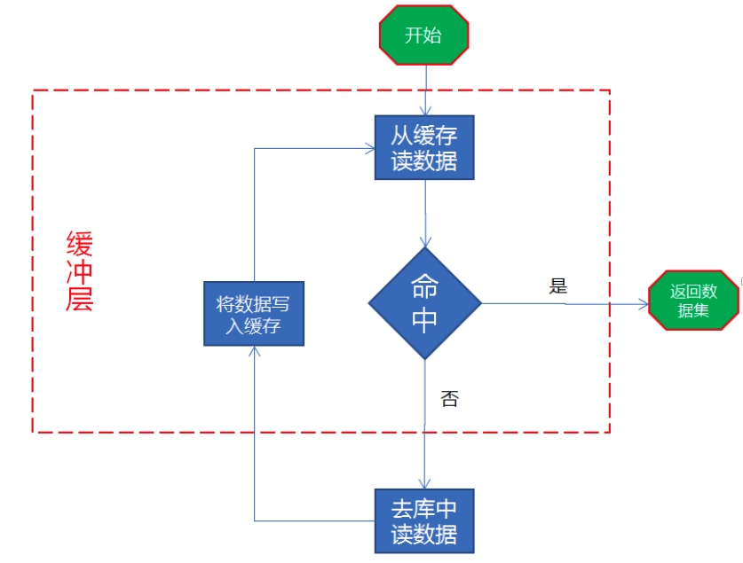
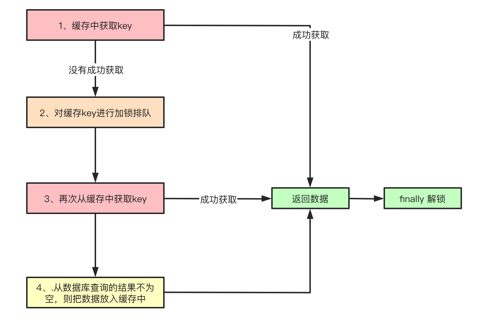

缓存逻辑流程图如下：
读取缓存步骤一般没有什么问题，但是一旦涉及到数据更新:数据库和缓存更新，就容 易出现缓存(Redis)和数据库(MySQL)间的数据一致性问题
讨论一致性问题之前，先来看一个更新的操作顺序问题：
问题:同时有一个请求 A 进行更新操作，一个请求 B 进行查询操作。可能出现:
(1)请求 A 进行写操作(key = 1 value = 2)，先删除缓存 key = 1 value = 1
(2)请求 B 查询发现缓存不存在
(3)请求 B 去数据库查询得到旧值 key = 1 value = 1
(4)请求 B 将旧值写入缓存 key = 1 value = 1
(5)请求 A 将新值写入数据库 key = 1 value = 2
缓存中数据永远都是脏数据
比较推荐操作顺序: 先删除缓存，再更新数据库，再删缓存(双删，第二次删可异步延时)
缓存同步方案
缓存雪崩、缓存击穿
缓存雪崩是指缓存中数据大批量到过期时间，而查询数据量巨大，引起数据库压力过大甚至 down 机。和缓存击穿不同的是，缓存击穿指并发查同一条数据，缓存雪崩是不同数据都过期了，很多数据都查不到从而查数据库。
缓存击穿是指缓存中没有但数据库中有的数据(一般是缓存时间到期)，这时由于并发用户特别多，同时读缓存没读到数据，又同时去数据库去取数据，引起数据库压力瞬间增大，造成过大压力。
方案一：加锁
保证只有一个线程到数据库 去查找指定的 key 对应的数据
加锁方式的流程流程：

public Object get(String key) {
// 1.从缓存中取数据
Object value = getFromCache(key);
if (null != value)
return value;
//2.加锁排队，阻塞式锁---100个线程走到这里---同一个sql的取同一把锁
doLock(key);
try {
//双重校验，不加也没关系，无非是多刷几次库
value = getFromCache(key); //第二个线程，能从缓存里拿到值？
if (null != value) {
return value;
}
Object dbValue getFromDataBase(key);
// 3.从数据库查询的结果不为空，则把数据放入缓存中，方便下次查询
if (null != dbValue) {
putInCache(key, dbValue);
}
return dbValue;
} catch (Exception e) {
return null;
} finally {
//4.解锁
releaseLock(key);
}
}
方案二：做二级缓存，一级缓存失效后去二级缓存获取
方案三：不同的 key 设置不同的过期时间，让缓存失效时间点尽量均匀
缓存穿透
缓存穿透是指查询一个一定不存在的数据，由于缓存是不命中时被动写的，并且出于容错考虑，如果从存储层查不到数据则不写入缓存，这将导致这个不存在的数据每次请求都要到存储层去查询，失去了缓存的意义。在流量大时，可能DB就挂掉了，要是有人利用不存在的key频繁攻击我们的应用，这就是漏洞
方案一：布隆过滤器
public void init() {
//在bean初始化完成后，实例化bloomFilter,并加载数据
List<CacheValue> cacheValues =searchAll();
//当成一个SET----- 占内存，比hashset占得小很多
bf = BloomFilter.create(Funnels.stringFunnel(Charsets.UTF_8), cacheValues.size());
for (CacheValue p : cacheValues) {
bf.put(p.getKey());
}
}
public CacheValue get(String key) {
//先判断布隆过滤器中是否存在该值，值存在才允许访问缓存和数据库
if (!bf.mightContain(key)) {
System.out.println("非法访问--------" + System.currentTimeMillis());
return null;
}
// 可以使用上面的get方法，防止缓存雪崩或击穿
return getCachedValue(key);
}
方案二： 对查询结果为空的情况也进行缓存，缓存时间设置短一点，或者该 key 对应的数据 insert 了之后清理 缓存。